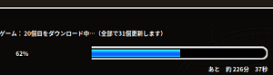
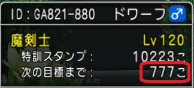
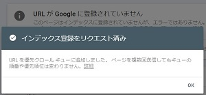
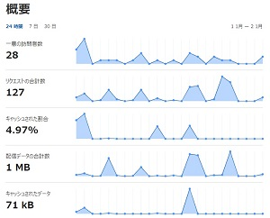

ドラクエXあッサンのブログです
ドラクエXプレイヤーのあッサンです |
次へ ＜ ＞ 前へ
2022/02/27 17:46
linuxでwebサイトやらゲームやら興味あることやろうかと思ってubuntu20.04入れました
現在PC環境はWindows 11 Pro(ssd 512gb)とUbuntu(ssd 128gb)とファイル保存用に(hdd 2tb)の構成
結論からいうとゲームはやっぱりWindows環境依存が多いんでそういうのは他のOSは向いてないです（当然ですw）
WineでLineインストールして起動しようと思って最新ダウンロードできなくて思ったように使えなかったこと
lutrisでドラクエXしようと思ってインストールしてパッチに９時間位かかった挙句に
ログイン画面でID入力が表示されずにログインできなかったことが今の問題
多分dllが不足しているのとie8をインストールした順序が関係してるかも
不足dllはie周りでは.net系、silverlightやらなんやかんやかもしれない
で今回のLinuxでのインストールの２件は時間がかかり過ぎてるから保留にしとく
( ；∀；)(更新ステータスバー切れてるし)

あとはubuntuで前から気になってたLAMPやらWordPressをやってみるのと
Windows11環境とUbuntuでGit環境インストールしておくことが今のやってみたいこと
あと他のゲームをWindows11でやってみたいのがあって今日中それやってみます
今Gitの環境設定したくない気分なんで楽しそうなことやってみる
2022/02/20 12:10
先週から色々と諸事情があってドラクエXできなかった
自作PCについてはやっと昨日パーツがそろってPC組んで
そこからかなりOSのインストールやらドラクエXのインストールやらで色々時間がかかった
今の所Windows 10 ProからWindows 11 Proにアップグレードしたところ
色々ざっくり設定したんでPCやWindows 11について色々と思うことがあっても時間がないんで
後で色々自分なりにレビューして書いていく予定
まだバージョン管理やらニッチなIDEやらいろんなソフト入れる予定
今日組んだPC
ケースファンとCPUファンが光ります
((´∀｀*))☆彡
個人的趣味です光なくても動きますｗｗｗ
それからドラクエベンチ結果
今回作ったPCはグラフィックボード載せてる
ベンチまだとってないけどドラクエするだけについては
core i3-10105内臓GPUで十分だと思うんでそれだけならグラフィックボードはなくてもいけると思う
今度気が向いたらドラクエベンチをグラフィックボードなしでやってみる予定
もともと使ってたノートよりいいCPUだからいけると思う
さて久しぶりに落ち着いてドラクエでもします
2022/02/11 22:50
パソコン工房で探していたcpuの棚を発見
価格は新品で13,600円位
しかし品はSold Outだった(*´д`;)…
探していたcore i3-10105のスペックについては
・内蔵GPUありの4コア8スレッド
・クロック周波数は3.7～4.4GHz
個人的には十分なスペックだと思しコスパとしてはかなり良いと思う
諦めてネットで探していたところヤフオクに行き着いた
中古で13,000円で即決落札だったので即即決した
送料が660円だったから値段的には誤差程度でよかった
ヽ(；▽；)ノ
それからその品は数時間程度使ったくらいの物らしい
動作確認はまだであと残りのPCケースとメモリを買ってからPCを組む予定
探していたCPUをたまたま落札できてその商品が来ただけで嬉しい
嬉しすぎてカメラで撮りましたｗ
PC組み立てるの楽しみですわｗ

あとCPUにCPUクーラーが付いているけどその付属品のクーラーは
あまり評判が良くないからアマゾンでcpuクーラー購入してみた
それで今日きましたｗ
色々考えた結果Ledで光るクーラー買った1,555円
よく冷えそうなクーラーなんで期待しとこ
2022/02/07 22:04
昨日は安い物がラクマに出てたんで
・sata3 ssd → ADATA ssd sata3 512gb 4,047円(内893ポイント使用)
・電源ユニット → PC用 電源ユニット 600W BRONZE 3,240円
を購入した
色々コスパ見て考えてたんだけど
選択肢がコスパ又はハイスペックかに別れました
ハイスペックの場合CPU ＋ メモリは
core i9-11900 ＋ DDR4-3200 32GB
になってザックリ計算すると 50,000 + 14,000 で 新品で合計64,000円位
コスパの場合CPU ＋ メモリは
core i3-10105 ＋ DDR4-2666 32GB
になって 14,000 + 12,000 で 新品で合計26,000円位
う～んどのみちメモリ高いね
そしてどのみちグラフィックはないと困ることあるんよね～
あと中古ねらいなんよね～
パソコン使うとき中古とか気にするけど
会社で使うパソコンはみんなで回して使ってるからね
ほとんどの人が中古なんよね(・∀・)
コスパ重視で行くしかないね
とかなんとか言っても十分にハイスペックなんよね
2022/02/06 12:45
動画編集したりゲームしたり最近のプログラム試したりしたいと前から思っているのと
Web会議したりしながら何かをできる環境が前からほしいな～と思っていたところ
今よりはいいPCが必要になってくるのと何かと最近出費が多かったので諦めてたところ
激安のマザーボードを昨日発見して購入したヽ(*´∀｀)ノ
新品で製品保証２年付きだったのに１個売れ残ってたｗ
凄い考えた結果買って帰ったヽ(*´∀｀)ノ
久しぶりの自作PCをネタにもう一つブログサイト立ち上げようかと思うくらいの安さだった
残りの必要パーツは
CPU intel LGA1200チップセット
ddr4 2933
sata3 ssd
電源ユニット
PCケース ミニタワー
GPU gtx
やっぱりグラボは欲しいと思ってデスクトップ型狙ってたんよね
とりあえずCPUから買っていきたいけどまだi5-110400は25,000円まではいかないくらいの値段なんよね
高いんよね～(ｰｰ;)
ということで今月は買えません
来月以降買うとしたら楽天ポイントをフルで使って購入したうえでラクマ使ってみるとか
近所のパソコン工房行ってみるとか色々してみて金策する予定
コスパ重視だけどcpuは少し性能いいのが欲しいんよねちゃんと内蔵GPUが付いてるのがいいと思う
けど現実はどうなるかわからん
買えるまではネチネチとネットの価格をチェックしながらグラボのマニュアルを見ることにする
2022/02/01 19:45
本日のベストショット
ヽ(￣▽￣)ノ

2022/02/01 15:45
本日の当選結果は
約６００枚中
１等 １枚
２等 １枚
３等 ０枚
こりゃ昨日よりも渋いわ(ﾟДﾟ≡ﾟДﾟ)?
サーバー２１のガートランドが悪いのかそれとも日が悪いのか
アンドレアル１枚出たからそれはよかったヽ(；▽；)ノ
2022/01/31 21:50
本日の当選結果は
約６００枚中
１等 １枚
２等 １枚
３等 １枚
かなり渋いわ(；´Д｀)
しかしアンドレアルコインは高値で美味しいわｗ
2022/01/30 14:30
本日の当選結果は
１０００枚中
１等 ５枚
２等 ８枚
３等 ２枚
福引補助券は数えてないｗ
日曜日は福引なかなか当選しないかと思ってたけど今日まぁまぁじゃんかｗｗｗ
この調子で行きたいよね
2022/01/29 15:20
ちょっと福引しようと思ってログインしたら
サポに入れようと思ってたフレがログイン中で雇えなかったんで
前からやろうと思ってた残件で
401、403、404、500エラー画面を適当に作って設定しといた
これでレンタルサーバー標準のエラー画面は回避できるはず
(￣▽￣)
2022/01/27 22:35
本日の当選結果は
５００枚中
１等 ２枚
２等 １枚
３等 ３枚
福引補助券は数えてないｗ
今日は昨日に比べるとぼちぼちってとこかな～
2022/01/26 22:40
福引更新初日で当選結果は
８００（内２００はお出かけツール）枚中
１等 １枚
２等 １枚
３等 ２枚
激渋だったから明日に期待
先日出した魔塔のブラッドエッジに戻せないことについての回答即日貰ってたけど
そらまぁ激渋な回答だったと思う結局まだなぞ解きは終わってない
（それ自分だけなんかな？(´Д｀;)）
2022/01/23 20:25
今のレンタルサーバーとドメインの価格みてVPSの最安プランの契約みてたら
VPSを試したくなってきた(´ε｀；)ｳｰﾝ…
最近は国内のサービス最安くらいでLinuxプランで月額350円くらいで当然ドメイン代金別途
国外のVPSとか詳しかったらやってみたいけど国外は距離が遠いからね
pingとか時間かかるとはサイトに書いてあったのと料金もそこまで変わらんのんよね
このサイトをもうちょっとやらやりなれたら次はVPSだね～とは思ってるんだけど
Windows Serverのプラン高いんよね(￣▽￣;)
この際Linuxでやってみてもいいんだけどね
どうしよっかと悩んでるんよね～
Windowsに慣れてるからLinuxに抵抗あるんよね～
やるならWindowsプランよりLinuxプランのが安いからLinuxやらないといけんねｗ
2022/01/23 20:20
魔塔のでキングブレードからブラッドエッジに退化できなくて困ってるんだけど
あまりに困ってるのでサポートにQA出した
2022/01/22 18:50
不思議の魔塔30階迄行ったんよねｗそれで全部問題なく一応こなすはずだった
しか～しｗ問題あるわ～
なぞ解き24階でなんとブラッドエッジで戦わないと解けないなぞなぞについて
その時すでにキングブレードに進化させていたんでブラッドエッジがなくて謎が解けなくなった結果
虹のフェザーチップが２枚手に入ってない
ブラッドエッジにするには赤い扉で戦って獲得するしかないけど
ずーっとその武器出るまで戦わんといけんｗｗｗ
途方にくれてますｗ改定してほしいわ
2022/01/19 21:50
不思議の魔塔新しくなってたの～ｗ最近まで知らんかったわｗ
時間あるときに行く予定
2022/01/17 22:14
Googleアドセンス審査落ちたわ
要は現在Googleアドセンスから見て興味がないサイトだという理由だと思う
まぁ落ちても何回も修正して出した方がいいとは書いてあった
また気が向いたら再審査してもらえばいいし
他の広告も探してみようとは思った
2022/01/16 16:20
とりあえず画面上の「メニューへ」追加した
なんか取り合えずで参考元のページをアレンジして作った
参考元ページの原型はほぼないけどコピペでやった感じ
まだエラー画面を設定してないとかあるからね～それもしないといけないんだけどｗ
一気にやると今疲れるし時間かかるから今のところはこれでいいや～
(゜-゜)
2022/01/16 00:45
去年の暮れのハッピーくじの結果忘れてたから行ってみた
結果は3等20個でした
(´・ω・｀)
まぁゴールド当たらないね
だいぶ前に当たった人見たけど全部ランプ錬金に入れたみたいなこと言ってたわ
その人ランプ錬金で一発狙ってたみたいよｗ
とりあえず今メニュー画面考えてるけど
本当に適当な画面でいんよね～
ホームページの画面こだわると一生がおわってしまいそうな気がするんよ
メニュー画面と記事画面はこのブログの画面みたいな感じで終わらせる予定
とにかく今回のこのブログを作成するまでの経緯とか備忘録として見れるようにしとけば役に立つからね
明日あたり本当にしょぼいメニューでも入れてみようかな
2022/01/12 20:25
今日もストレス発散ついでにじげんりゅうを倒して来たわ
何回か倒してちょっとはスッキリした感じ
女神の木はこんな感じだけどlv10までまだ全部上がってない
まぁこのまま行けば全体がlv10時間があまりかからないとは思う
2022/01/10 14:20
昨日作成したこのサイトの実行画面ををツールで見てみるとの<table>タグに入れてるはずの文章が入っていなかった事に気が付いて即修正した
<table>タグは行を入れた後に列を入れて書くときに幅を指定しないとブラウザで幅0で認識されるので幅サイズを入れないといけない事に気が付いて
とりあえず固定幅入れておいた
<table>タグは<div>タグと比較すると使用はやめた方が良いという記事を何件もみかけた
いろいろと使いにくいという理由の他にもあるみたいだけど
今回はこれで様子見ていく予定
もともと参考にしたサイトはこの調子で25年以上運営してるみたいで今でも検索結果に入って来ているから気にしない事にした
個人的に<div>を意識しないで使って来た理由としてはサーバーサイドのIDEを使う理由が多いかったからで
当たり前のように使用してきたので理由は考えたことがなかった
サーバーサイドのIDEを使うと<div>を使う理由はやったことある人ならわかると思うけど
簡単に説明するとhtml側のサンプルやらテンプレやらがそんな感じになっていることが理由
そんな感じの理由が他にもあってそれで問題もないのでなんとなく使用してきた
今回のサイトはIDEを使用してないしサーバーから動的にする個所はほとんど考えてない
やるとしたら簡単なcgiにならざる得ないサーバープランだからね
参考にしたサイトは昔から残っているし現在検索結果にも上位に出てくるサイトなんだからこれで通して問題ないね
もし必要が出てきたら<div>にしようと思う
まぁそれでも<div>を使いすぎたらSEOに問題出てくるみたいよ
( ﾟдﾟ)
2022/01/10 13:48
今日は10日なのでドラクエテンの日です今回は福の神メダル3枚と福の神カード1枚をもらって
モコモコハウスから迷宮に入って大量の福引券をゲットしようとした結果
やっぱり1回で獲得できる福引券に今回のキャンペーンは影響ありませんでしたｗ
期待して行ってみたけどいつもと同じで萎えました
そして今回のキャンペーンでニャンコインがいつもよりセールでお得だったんで98枚買いました
合計で小さなメダル700枚払いました
ガチャは当分しないで気が向くまでニャンコインとっておきますｗｗｗ
2022/01/10 07:30
昨日アドセンスの申請出した後にドラクエＸしないで寝落ちしてた
アドセンスは申請通るかわからないね
昨日は結局htmlタグ中のcssでtext-alignでの中央寄せがtableに効かない事で
結構ハマってました色々方法はあるんだろうけど理解が難しい・・・
(・_・;)
htmlは使うからなるべく理解した方がいいと思う
今回はネットサーフィン中にwebデザインのサイトを見て簡単な物であれば試しにやって見ようと思ったんで
やりたいサイト出した後くらいの順番でやってみようとは思う
今回は初Googleアドセンスなんよね中々モチベーション無いとか色々あってアドセンスは
やってみたことなかった
申請出してみた結果Googleの申請画面って勝手に広告出す場所探したりしてて
凄いな～と思った
それから申請は落ちることは当たり前のようにあるということなんでｗ
落ちてからもレイアウト修正して何回も申請することが可能らしいｗ
何回も申請するモチベーションが続けば申請するｗ
Googleは滅多にない広告サービスだけど他のも色々あるんよね
また今回のドラクエＸブログとは別の分野でサイト出したときとか申請するよ
このブログにかかった費用についてはサーバ代が3年とドメインが1年で5,800円位で支払い済みで
ドメイン代の方が結構高いドメインは２年目から1,650円位かかるからこのまま運営すれば平均月額263円位
２年目からのドメイン代はクラウドフレアに移管して安くするかもそれで半額位になる
バリュードメインは結構使いやすくてwhois代行無料で良かった
次はどこでドメイン取得してレンタルサーバー利用しようか沢山あって迷いますｗ
今回は運営しながら様子見ていきます
今日は仕事ないんでストレッチでもしてドラＸインするよ
2022/01/09 19:40
とりあえずレイアウトのhtmlざっくり修正した感じ
見た感じあんまり変わってないですけどブログ書く方には大違いな修正したよ
ブログを書きやすくしてサイトをもう少し早く表示させるように修正して
一番下にCopyrightを一応つけた感じかな～
このレイアウトだと行に気兼ねなく広告入れる感じだから
これで一応アドセンスの申請を出す予定
あと気が向いたらヘッダやらコンテンツやらフッタに分けれれば良いんだけどね
今日はあんまりする気しない
凄い久しぶりにhtmlやってみて難しかったよ
参考にしたサイトには感謝しますありがとう
どこかの研究室のペラペラのhtmlのソースコード大変助かりました
cssもなくて大変見やすいサイトですね
そういうサイト見つけるのにも色々検索結果出てきて行き着くまでが大変でした
(o´Д`)=з
そしてキリがいいとこまで出来てよかったです
ヽ(；▽；)ノ
ラインのシェアボタンについてはカスタムリンクの方に修正したよ
読み込むときに再表示されることが少し目立ってたのでカスタムリンクにして様子見るよ
あとでドラＸしよｗ
2022/01/09 09:30
昨日はブログ書いた後に参考になるサイトをスマホで探してました
う～んなんかwordpressの検索結果が多いんよねそれでも好みのサイト少しは見つかりました
開発する時のエディタは今使っているVisual Studio Code 1.63.2が個人的には使いやすくて
とりあえず日本語化してなかったんでｗ日本語化からインストールして他の人のサイトを参考にして
拡張機能を4個インストールしました特に拡張機能のopen in browserは便利
とりあえずドラクエXの万魔してからブログのレイアウト作成していく予定
できればサクッと終わりたいんだけどね終わらんのんよね～ｗ
2022/01/09 01:00
ドラクエＸの週課してたらかなり時間経ってた直前のDNSサーバーの設定変更した件で
クラウドフレアからのエラーメールがきてて設定し直した
ネームサーバーの設定やり辛いねあと今回のブログサイトのレイアウトの件で
どういうサイトにするかサイト見たりしながら考えててこの時間でまだ寝てない
～～～～～～～～～～～～～～～～～～～～～～～～～
今回ブログサイトの作成方針は
・コードの修正に手間をかけないシンプルな物
・広告枠は一応確保できる物
・１枠はリンク集ができる物
・最初の作成に時間をかけない物
・作成手順は初心者でもできる物
～～～～～～～～～～～～～～～～～～～～～～～～～
簡単なデザインのサイトは見易いものが多くて見てても気持ちいいから個人的には好き
あと記事サイト用のレイアウトもこんな感じで作成したいなどまだ細かいこと色々あるけど
デザインにこだわると表示が遅くなるからCSSフレームワークはなるべく使わない
wordpressはローカルで作成するときにこのPC環境だと動かないので今回は使えない
今回色々手探りでやってみて思った事はwordpressって「初心者でもできます」
て書いてあるサイト多いねそしてそれは違うと思ってて設定が結構手間だと思うね
そしてその分運用保守に影響あると思う
レンタルサーバーについてはwordpress設定できるプランは割高よね
2022/01/06 21:39
今日サイトがクライアントエラーになってた
403と404のエラーがでてたけど原因はレンタルサーバーの契約金の決済が
済んでなかった事が原因で運営がサーバーを一時的に停止していたことでのエラーなんよ
即決済した後に思ったことは
エラーページの内容がちょとまずいかな～本文にレンタルサーバーの名前とかあるし
エラーコードの出力もあるし500番台のエラー出力だと思うんだけど違うんかな～
まぁこの件も優先度低いけどTODO入り
2022/01/05 21:03
今日はあまり時間がないのでwhois代行設定してTortoiseGitを日本語化した
バリュードメインは初めて使ったけどwhois代行無料はいいよね使って良かった
あとはHTMLを広告表示できるいいデザインがあれば参考にして取り込んでレイアウトを良くしたいね
2022/01/04 21:11
TortoiseGitでGitHubに接続しようとしたら接続エラーになった
.NET Framework 4.7.2が必要Windows8にはそれは適用できないから
TortoiseGit 2.12.0.0 はGitHubに接続不可能
アプリケーションのバージョン下げるとかしかないね
ローカルで使う分には問題ないかもしれないので使いながら様子見ます
Windows8ちょっときついね最近のOSに依存しすぎると汎用性に問題出てくるかもね(´Д⊂
2022/01/03 23:05
画面ではまだインデックス登録は
済んでないみたいですけど
Google検索結果にurlで表示されました
うぇ～いｗ(^^♪
2022/01/03 22:45
う～んこの環境だとこれ以上の管理サーバーはあんまり設定しなくていいかな～
後は管理サーバーを使っていきながらおぼえるあとGoogleにIndex登録済みとして
TODOリストは
1.開発環境周りを整える
1-1.バージョン管理ツール設定
1-2.大まかにHTMLのレイアウト設定
2.グーグルアドセンスの登録
※とりあえずHTMLでレイアウト決めてからの方がいいかも
こんな感じで進めて行く予定
2022/01/03 18:25
Googleの検索結果に出るように作業中に来客ありましたお土産のケーキ食べながら
３時間位最近の話聞いてました
でそれが終わってGoogleにインデックス申請しておきました

地味にtxt書く作業やらで思ったより時間かかりました
申請して結果来るのに時間かかるみたいなんで今日はキリがいいしここからはドラクエする予定
まぁまだサーバー登録してないところあるんよ
2022/01/03 11:00
Google検索で自分のサイトを検索した結果こんな感じでした
まぁそういう問題でもないんですよねこのサイトがグーグル検索でurl検索しても
見つからないのでドラクエＸしながら対策していこうと思います
2022/01/02 23:45
サーバーでメアドの設定したしてみたら容量少ないからyahoo mailの方がいいね
一応作っておいたまだ他にサーバー設定するにしても
ぼちぼちtwitterのアドレスDQXのフリコメに貼っとこ
2022/01/02 17:44
遊んで帰ってきてみたところクラウドフレア設定はとりあえずＯＫみたい
概要にダッシュボードでました

だけどとりあえずなだけでまだ終わってないんよ・・・突っ込みどころがあるんよ
あとドメインの会社からa3dqx.xyzの件で１月１日に回答ありました
それで不具合の原因はわかったんですけど
既にa3dqx.tokyo設定してるんで解約しました
今度はレンタルサーバーも他のでやってみますあと島根まで遊びに行ってきましたけど高速道路ホワイトアウト状態でしたｗ